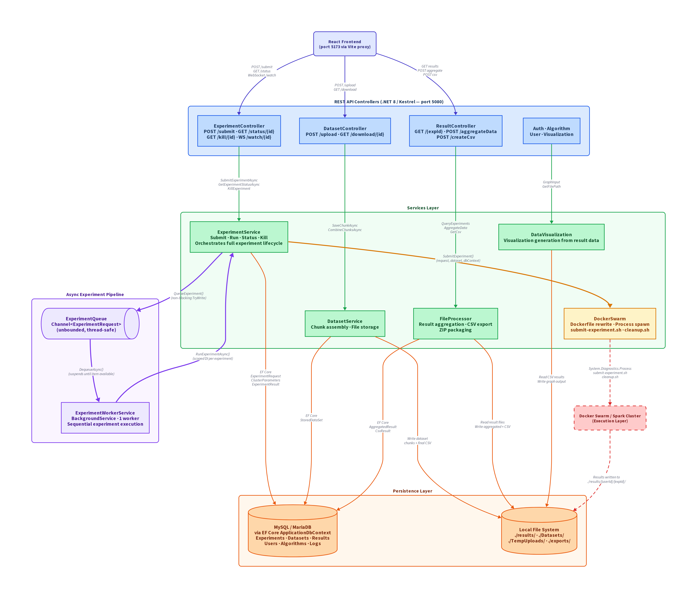

Diagram

docs/applayer/application-layer.png.
Technology stack
| Technology | Role |
|---|---|
| .NET 8.0 (C#) | Application runtime and web framework (Kestrel HTTP server) |
| Entity Framework Core | ORM — maps C# entities to relational tables, manages migrations |
| MySQL / MariaDB | Persistent data store for users, experiments, datasets, results, algorithms |
| Serilog | Structured logging (console, debug, and MariaDB sinks) |
| Google OAuth 2.0 | Authentication — restricted to @mix.wvu.edu domain; cookie-based sessions |
| Swagger / OpenAPI | Auto-generated API documentation from XML comments |
The backend runs on port 5080 and exposes a REST
API consumed by the React frontend (proxied through Vite on port
5173). All service registrations and DI wiring live in
Program.cs.
Three sub-layers
Internally the backend follows a classic three-layer split: Controllers handle HTTP, Services contain business logic, and Data manages persistence through EF Core.
Controllers (REST API surface)
| Controller | Key Endpoints | Responsibility |
|---|---|---|
| ExperimentController | POST /submit, GET /status/{id}, GET /kill/{id}, WS /watch/{id} | Experiment submission, status polling, kill requests, real-time log streaming via WebSocket |
| DatasetController | POST /upload, GET /, GET /download/{id} | CSV dataset upload (single and chunked), listing, download |
| AlgorithmController | POST /upload, GET /algorithms, GET /algorithmParameters | Algorithm JAR upload, listing, parameter definitions |
| ResultController | GET /{experimentId}, POST /aggregateData, POST /createCsv | Single result retrieval, multi-experiment aggregation, CSV export |
| AuthenticationController | GET /login, GET /logout, GET /session | Google OAuth login/logout, session validation |
| UserController | User CRUD | User management |
| VisualizationController | Visualization CRUD | Data visualization configuration |
Services (business logic)
| Service | Lifetime | Responsibility |
|---|---|---|
| ExperimentService | Scoped | Core orchestrator — submit, run, status-track, and kill experiments |
| DatasetService | Scoped | Chunked file upload assembly (save chunks, combine into final file) |
| FileProcessor | Scoped | Result aggregation across experiments, CSV generation, ZIP export |
| DataVisualization | Scoped | Visualization generation from result data |
| DockerSwarm | Singleton | Cluster interface — updates Dockerfiles, spawns shell scripts as subprocesses |
| ExperimentQueue | Singleton | In-memory Channel<ExperimentRequest> connecting submission to execution |
| ExperimentWorkerService | Hosted (Background) | Long-running consumer that dequeues and processes experiments sequentially |
Data (persistence)
| Component | Description |
|---|---|
| ApplicationDbContext | EF Core DbContext — 13 DbSet<> properties mapping to MySQL tables |
| Migrations/ | EF Core code-first migration history |
| Serilog MariaDB sink | Writes structured log entries to a Logs table |
Orchestration: how data moves to the cluster
When the backend needs to execute an experiment on the Docker Swarm
cluster, it does so entirely through shell script
subprocesses managed by the DockerSwarm
singleton service. The flow is:
-
Dockerfile rewrite.
DockerSwarmmodifiesdocker-images/spark-hadoop/Dockerfileto COPY the submitting user's algorithm JARs into the container image (/opt/jars/). This isolates algorithm code per user. -
submit-experiment.sh. Launched viaSystem.Diagnostics.Process. Receives ~20 positional arguments:- Environment username, log file path
- Dataset path (relative to host filesystem)
- Cluster parameters (node count, driver memory/cores, executor count/cores/memory, memory overhead)
- Algorithm main class and JAR filename
- HDFS base URL (
hdfs://master:8020), local output directory, HDFS output path - Experiment ID (GUID)
- Algorithm-specific parameters (sorted by
DriverIndex)
spark-submit, and extracts results back to the host filesystem. -
PID tracking.
After the subprocess starts, its PID is persisted to the database
(
ExperimentRequest.ProcessId), enabling experiment termination from the API. -
cleanup.sh. Runs unconditionally aftersubmit-experiment.shexits (success or failure). Tears down the Docker stack, removes HDFS artifacts, with a 30-second timeout. -
Result return.
Results are written to
./results/{userId}/{experimentId}/on the host filesystem. TheDockerSwarmservice returns anExperimentResponsecontaining the exit code and output file path.
Experiment lifecycle
WaitingInQueue → BeingExecuted → BeingProcessed → Finished
↘ Failed
(any stage can transition to Failed on error)| Status | Trigger | Timestamp |
|---|---|---|
| WaitingInQueue | ExperimentService.SubmitExperimentAsync saves to DB and enqueues | CreatedAt |
| BeingExecuted | ExperimentService.RunExperimentAsync picks up the experiment | StartTime |
| BeingProcessed | ProcessExperimentResultsAsync begins saving result records | — |
| Finished | Result file path persisted to ExperimentResult table | EndTime |
| Failed | Any exception during execution or non-zero exit code | EndTime |
Error messages are truncated to 255 characters (a database column
constraint) and stored on the ExperimentRequest record.
Submission flow (SubmitExperimentAsync)
- Generate a new experiment GUID
- Create
ExperimentRequestentity (status:WaitingInQueue) - Create
ClusterParametersentity (Spark/Docker resource config) - Create
ExperimentAlgorithmParameterValueentities (algorithm-specific params) - Atomic save — all three entity types persisted in a single
SaveChangesAsync()call - Enqueue —
_experimentQueue.QueueExperiment(experimentRequest) - Return experiment ID to the caller (HTTP 200 returns immediately)
Termination
The KillExperiment method retrieves the stored
ProcessId and issues a process kill via the OS. It then
sets the experiment status to Failed and clears the
PID. Only experiments in active states (WaitingInQueue,
BeingExecuted, BeingProcessed) can be
killed.
Channel-based queue
The experiment queue is the critical decoupling point between the
synchronous HTTP request path and the asynchronous background
execution path. It is built on
System.Threading.Channels.
Interface
void QueueExperiment(ExperimentRequest experiment); // non-blocking enqueue
ValueTask<ExperimentRequest> DequeueAsync(CancellationToken); // async blocking dequeueImplementation
- Backed by an unbounded
Channel<ExperimentRequest>(no capacity limit — bounded only by available memory) - Configured with
SingleReader = false, SingleWriter = false(thread-safe for concurrent access) - Enqueue:
_queue.Writer.TryWrite(experiment)— non-blocking, always succeeds on an unbounded channel - Dequeue:
_queue.Reader.ReadAsync(cancellationToken)— suspends the calling task until an item is available or cancellation is requested - Registered as a Singleton in DI — one queue instance shared across the entire application lifetime
Why channels?
System.Threading.Channels provides a high-performance,
lock-free, async-aware producer/consumer primitive purpose-built
for .NET. Compared to alternatives:
ConcurrentQueue<T>requires manual signaling (e.g.,SemaphoreSlim) for async waiting; channels have this built inBlockingCollection<T>blocks threads rather than suspending tasks; wastes thread pool resources- External message queues (RabbitMQ, Redis) are unnecessary infrastructure for a single-process deployment
ExperimentWorkerService
ExperimentWorkerService extends ASP.NET Core's
BackgroundService, which means it starts automatically
with the application and runs for the lifetime of the host.
ExecuteAsync (entry point)
⌊ creates _workerCount worker tasks (currently 1)
⌊ each runs RunWorkerAsync(workerId, stoppingToken)
⌊ infinite loop:
— await _experimentQueue.DequeueAsync(token)
— create DI scope (for scoped services like EF Core)
— resolve ExperimentService from scope
— await experimentService.RunExperimentAsync(request)Key design decisions
- Single worker (
_workerCount = 1) — experiments execute sequentially, one at a time. The architecture supports multiple workers, but currently enforces serial execution. - DI scope per experiment — each dequeued experiment gets its own
IServiceScope, ensuring a freshDbContextand preventing cross-experiment state leaks. - Fault tolerance — exceptions are caught and logged but do not crash the worker loop. After a failure, the worker immediately proceeds to dequeue the next experiment.
- Graceful shutdown —
CancellationTokenpropagates throughDequeueAsyncandRunExperimentAsync. On shutdown, pending dequeue operations are cancelled and the worker exits cleanly.
Sequential execution — current state and future goals
The current system processes experiments one at a
time due to _workerCount = 1. This is a known
limitation and one of the project's major goals for improvement.
Current behavior:
- If 5 experiments are submitted, they queue up and execute in FIFO order
- Experiment 2 does not begin until experiment 1 finishes (or fails)
- The Docker Swarm cluster sits idle between experiments during status updates and result processing
Paths toward parallel execution:
-
Increase
_workerCount— the simplest change. However, theDockerSwarmsingleton modifies a shared Dockerfile, so concurrent experiments would race on it. There's also cluster resource contention and non-deterministic status update ordering to consider. -
Per-experiment stack isolation — the
execution layer already names stacks with experiment IDs
(
{workdir}_{experimentId[:12]}), suggesting the shell scripts were designed with parallelism in mind. The Dockerfile race could be resolved by templating per-experiment Dockerfiles. - External job scheduler — replace the in-process channel with an external queue (Redis, RabbitMQ) to support multi-node API deployments and durable job persistence across restarts.
Database schema (key entities)
ExperimentRequest
| Column | Type | Notes |
|---|---|---|
| ExperimentID | Guid (PK) | Generated at submission |
| UserID | string (FK → Users) | Experiment owner |
| AlgorithmID | int (FK → Algorithms) | Algorithm to execute |
| ExperimentName | string | User-provided name |
| DatasetName | string | Name of the dataset to use |
| Status | enum | WaitingInQueue, BeingExecuted, BeingProcessed, Finished, Failed |
| ProcessId | int | OS PID of submit-experiment.sh |
| StartTime / EndTime | DateTime | Set on status transitions |
| ErrorMessage | string (max 255) | Populated on failure |
| CreatedAt | DateTime | Submission timestamp |
ClusterParameters
| Column | Type | Notes |
|---|---|---|
| ClusterParamID | int (PK) | |
| ExperimentID | Guid (FK) | One-to-one with ExperimentRequest |
| NodeCount | int | Number of worker nodes |
| DriverMemory | string | e.g., "5g" |
| DriverCores | int | |
| ExecutorNumber | int | Number of Spark executors |
| ExecutorCores | int | |
| ExecutorMemory | string | e.g., "5g" |
| MemoryOverhead | int | Spark memory overhead (MB) |
StoredDataSet
| Column | Type | Notes |
|---|---|---|
| DataSetID | int (PK) | |
| UserID | string (FK → Users) | Dataset owner |
| Name | string | Display name |
| FilePath | string | Relative path to CSV on disk |
| UploadedAt | DateTime |
ExperimentResult
| Column | Type | Notes |
|---|---|---|
| ResultID | int (PK) | |
| ExperimentID | Guid (FK) | |
| ResultFilePath | string | Path to output file on disk |
| CreatedAt | DateTime |
File system paths
| Path | Purpose |
|---|---|
./results/{userId}/{experimentId}/ | Per-experiment output directory |
./results/{userId}/{experimentId}/{experimentId}_log.txt | Execution log (streamed via WebSocket) |
./Datasets/ | Uploaded user datasets (CSV files) |
./TempUploads/{uploadId}/ | Staging directory for chunked uploads |
./exports/{userId}/aggregate_data/{aggregateResultId}/ | Aggregated multi-experiment results |
./docker-images/spark-hadoop/Dockerfile | Dynamically rewritten per experiment |
hdfs://master:8020 | HDFS base URL for intermediate cluster storage |
Error handling strategy
| Layer | Strategy |
|---|---|
| ExperimentWorkerService | Catches all exceptions; logs and continues to next experiment. TaskCanceledException handled for graceful shutdown. |
| ExperimentService.RunExperimentAsync | Catches all exceptions; updates experiment status to Failed with error message. |
| DockerSwarm.SubmitExperiment | Reads stderr asynchronously; always runs cleanup.sh regardless of success/failure; returns error code to caller. |
| Status updates | Inner try/catch prevents status-update failures from masking the original error. |